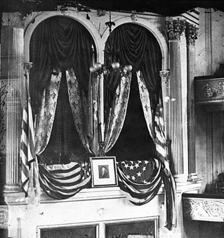
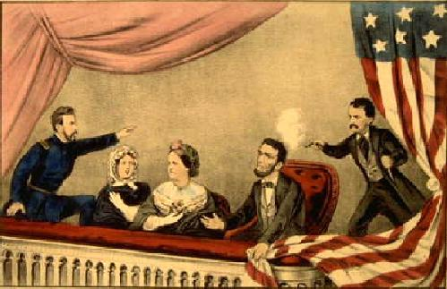
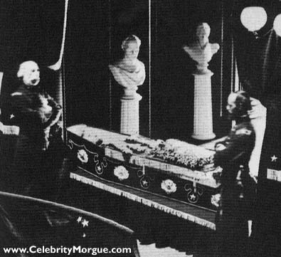
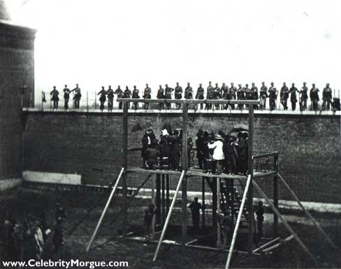
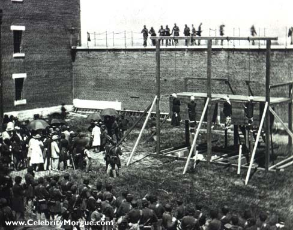
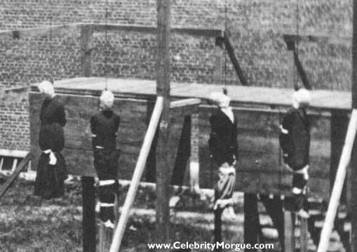
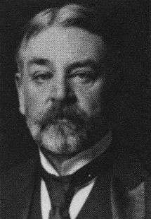

|
www.CelebrityMorgue.com
Lincoln's Box at Ford's TheatreLincoln attended Ford's Theatre to view the play "Our American Cousin". Seven hours before the assassination, John Wilkes Booth left a note at Vice President Andrew Johnson's residence, "Don't wish to disturb you. Are you at home? J. Wilkes Booth."
Lincoln is ShotCurrier & Ives print, The Assassination of President Lincoln. Account by William Cullen Bryant: After Booth shot Lincoln he lept on the stage from Lincoln's box, breaking his leg. As he ran from the stage, some heard Booth shout sic semper tyrannus , which is Latin for "thus always to tyrants". Others in the audience thought he shouted "The South is avenged!". Booth ran backstage, and being famliar with the theatre where he had acted, made his way downstairs and out the back door where he had a horse waiting for him in the back alley-way. One year previous to this fateful event, Booth, who was a leading Shakespeare actor of his time, played in Julius Caesar, in which after the assassination of Caesar one of the assassins, said "How many times shall this, our lofty scene be acted o'er, in states unborn and accents yet unknown?" The scene was acted o'er again, only this time it was real and Booth was the perpetrator and Lincoln the victim. When Lincoln passed away at 7:22 am on April 15, his Secretary of War, Edwin M. Stanton, standing at Lincoln's bedside, said "Now he belongs to the ages."
Lincoln's Body Lies in StateLincoln died April 15, 1865 at 7:22 AM. Here his body lies in state at the East Room of the White House, where it remained until his funeral on April 19. Lincoln's tomb in Oak Ridge Cemetary, Springfield IL, was built in 1871, where thieves attempted to steal the body in 1876 for ransom. In the early 20th century the tomb was redesigned to prevent a recurrence.
Conspirators Ready to HangJuly 7, 1865, the Lincoln conspirators prepare to hang. Booth escaped hanging; he was killed April 26 by the slightly looney Sgt. Boston Corbett, a man who had castrated himself to protect himself from sin.
The Dead ConspiratorsThe Lincoln conspirators, finally dead. 1,500 people witnessed the spectacle.
Close up of the ConspiratorsA close up of the dead conspirators. From left to right: Mary Surratt (owner of the inn Booth stayed at, and the first woman executed by the U.S. Government); Lewis Paine; David Herold; and George Atzerodt.
The Morbid Curse of Robert Todd Lincoln?Robert Todd Lincoln, the president's oldest son, was at Lincoln's side when he passed away in 1865. Years later, as Secretary of War, Todd Lincoln was present and ready to meet President James A Garfield, when Garfield was assassinated. And, when Todd Lincoln entered the Pan-American Exposition Hall in Buffalo, NY, President William McKinley was assassinated by an anarchist.
|